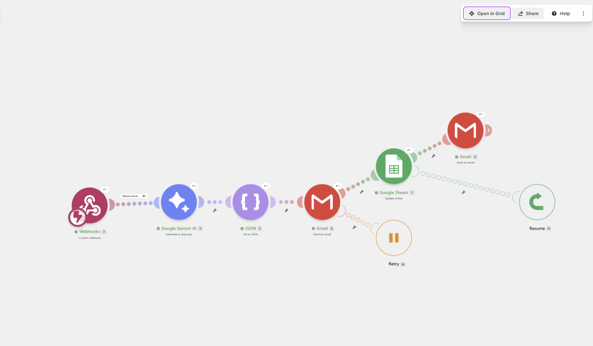
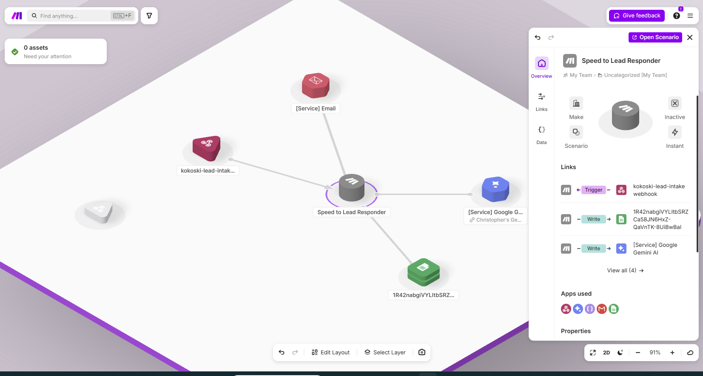
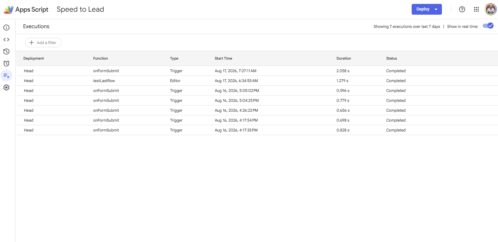
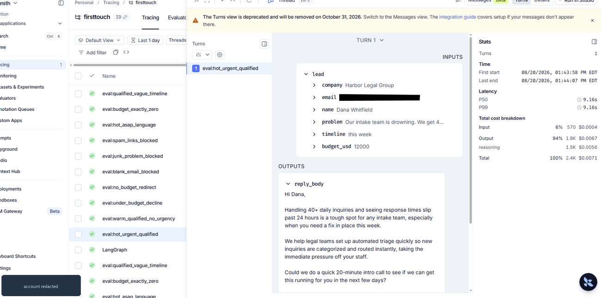
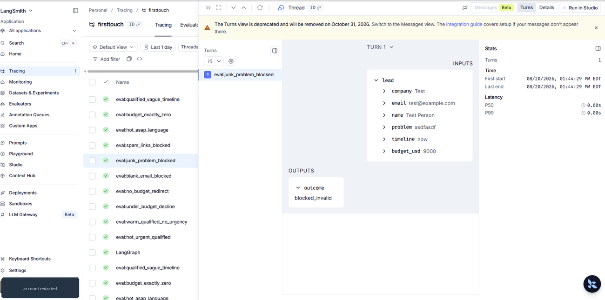

Build Lab / AI agent · No-code & LangGraph Shipped
FirstTouch — the reply that never keeps a lead waiting.
An AI agent that reads an inbound lead, decides how to respond, and replies in under a minute—while most businesses take hours, sometimes days. Every lead is triaged hot, warm, or cool, with the agent's reasoning attached. Built twice: once as a no-code automation running in production, then rebuilt as a LangGraph state machine to add the one thing the first version could not express.
Version 1 in action
The problem
Answer a new lead inside five minutes and you convert dramatically better than answering hours later—but most businesses take hours, sometimes days. That gap is the whole business case. The fix isn't a faster human; it's a system that never leaves a lead waiting.
Version 1: the architecture that shipped
Built on Google Forms, Google Sheets, Apps Script, Make, and Gemini. This is the version running in production. Six steps:
- 01Lead arrives
A form submission captures name, company, the problem in their own words, budget, and timeline.
- 02Webhook fires
The submission triggers the Make scenario instantly—no polling, no batch delay.
- 03Guard upstream
Incomplete submissions are blocked before the model ever runs, so a customer never receives an email full of blanks.
- 04The model reads the lead
Gemini reads the actual words—not just field values—and decides how to respond.
- 05The agent decides
This is what makes it an agent instead of a mail merge: a lead under budget gets a polite decline that names their constraint, points to a resource, and leaves the door open.
- 06Score and log
Every lead lands in the sheet scored hot, warm, or cool—with the reason the agent decided that way.
Operating cost: about two-tenths of a cent per lead in model spend, with capacity for roughly 1,600 leads a month on the base plan.
Under the hood






Version 2: why rebuild something that works
Version 1 sends automatically. That is defensible for a first touch, where a slow reply costs more than an imperfect one. It stops being defensible the moment a reply commits the business: booking a call, quoting a price, agreeing to scope.
A human-in-the-loop approval gate is my default building principle, and version 1 could not express it. A linear no-code scenario runs start to finish; it has no way to stop halfway, hold its own state, wait for a person, and resume where it left off. That single requirement is the entire reason for the rebuild.
- 01guard
Deterministic validation in code. Blank fields, undeliverable addresses, and spam are rejected here, before any model is consulted.
- 02triage
The cheap model classifies the lead hot, warm, or cool and picks one route. The verdict is checked against a closed vocabulary and fails loudly rather than guessing.
- 03draft_reply
The stronger model writes the customer-facing email. Cheap model for classification, better model for prose: cost follows the task.
- 04human_gate
Anything that books a call stops here. The graph pauses, hands a reviewer the draft plus the triage reasoning, and waits. Approve, edit, or reject.
- 05send
Low-stakes routes, a redirect or a graceful decline, skip the gate and go out immediately.
The gate is a real pause, not a policy note. The run stops, state is checkpointed, and nothing moves until a person answers. That is what version 1 was missing and what version 2 exists to provide.
approve is entered. A typed replay of an actual run; the output is verbatim.How I know it works
Ten labeled leads run through the real graph on every change: the happy paths, the budget edge cases, and three submissions that must never reach a model. Failures are sorted into two piles that are deliberately not averaged together.
- Quality failures are wrong tiers or wrong routes. Worth tracking, worth improving.
- Governance failures are an invalid lead reaching a model, or a call being booked with no human approval. One of these fails the entire run regardless of the accuracy score, because they are the two ways this system could actually damage the business.
Current result against live models: nine of ten clean, zero governance violations. The tenth is left failing on purpose. A lead with a budget of exactly zero satisfies two of my own routing rules at once, so the model had to guess. That is an ambiguity in my instructions, not a defect in the model, and the eval existing is how it was found. Tuning the prompt until the number reads ten of ten would hide a real problem behind a nicer figure.


blocked_invalid at 0.00s. No model was consulted, so it cost nothing.That second trace is the governance claim as evidence rather than assertion. The spam lead never reached a model, and the run itself shows it: zero latency, zero tokens, zero cost.
What building it twice taught me
- The platform follows the requirement. No-code shipped version 1 quickly and it still runs the real inbox. It could not hold a human gate, so version 2 moved. Neither choice was about which tool is better in the abstract.
- Test the artifact you ship. The offline test double passed while the live version failed, because the double returned a convenient response shape and the real model returned a structured one. A test that never touches the real thing can stay green while production is broken.
- A visible failure beats a clean scoreboard. The one failing eval case describes a contradiction in my own routing rules. That is more useful to me, and more credible to anyone reading this, than a perfect score.
What this does not share
- Every lead shown here is synthetic, written for the eval set. No customer, real inquiry, or real address appears in any screenshot.
- API keys live in an ignored environment file and never in source, so the code can be published as written.
- The account identity in the tracing screenshots is redacted.
- The demo video narration uses the tool's earlier working name, Speed-to-Lead. Only the name changed.
Slow response times costing you business?